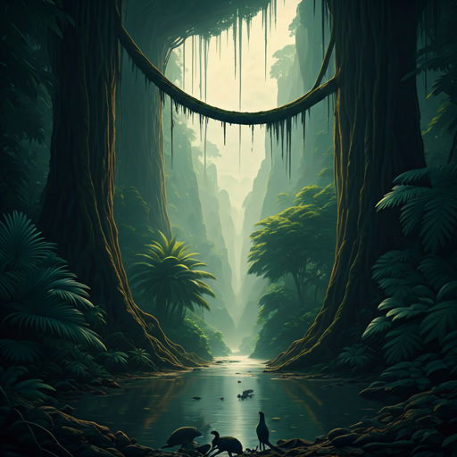

The Age of Reptiles
Spanning over 180 million years, the Mesozoic Era was a time of unimaginable biological innovation. Following the greatest mass extinction in Earth's history, the planet was a blank canvas. From these ashes rose the Archosaurs, and eventually, the Dinosaurs—creatures that would dominate land, sea, and sky.
Through DINO.CORE, you have access to a decentralized, highly advanced archive of paleontology data. Navigate through our Eras database to study 45+ unique specimens categorized by their geologic timeline, browse high-definition scans in the Fossils archive, or read up on our active expeditions in the Research lab.
Explore Eras
Dive into the Triassic, Jurassic, and Cretaceous databases.
View Fossils
Analyze high-fidelity structural scans and skeletal remains.
Research Lab
Review genetic echoes and ongoing global excavations.